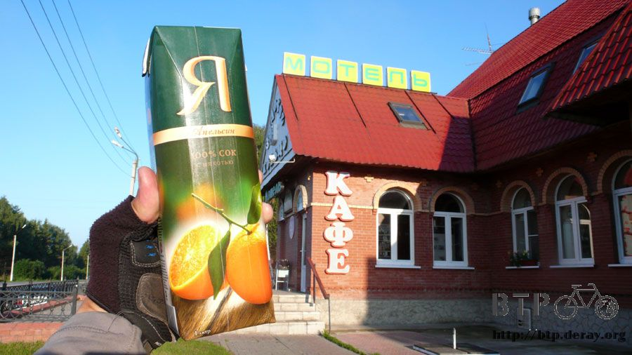
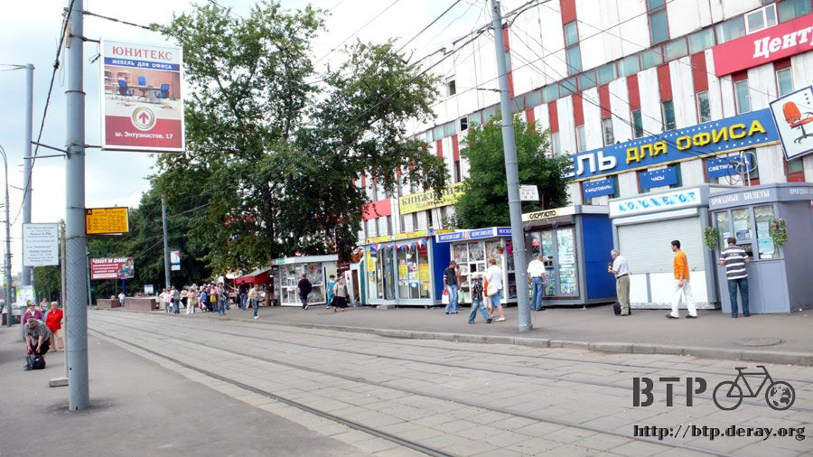

藍白拖踩進莫斯科
當我喝著熱咖啡，待在餐廳裡寫遊記時，覺得挑上這一間餐廳真是一個絕佳的選擇。
寫遊記的時候天色越來越暗，本來冷清的餐廳，客人像潮水般湧入，連包廂都坐滿。
看著桌上空空的咖啡杯，該厚臉皮地趴在桌上睡覺嗎？怎麼想都是妨礙人家做生意。
收拾咖啡杯走到櫃檯去，跟那位會說英文的服務員說我晚上能不能睡在更衣間的地板上，整個把餐廳當成旅館，但是她一樣同意了。
在更衣間裡睡得很不舒適，外頭客人交談聲、音樂聲實在有夠吵雜，到後來還唱起KTV來，一直到凌晨兩點多才漸漸安靜。
我沒有打開睡袋跟帳篷，直接躺在磁磚地板上，穿上厚衣服保暖，反正只需要委屈一個晚上，何必太在意，天亮之後就可以騎到莫斯科了。
形容詞是『天亮』之後，而不是『睡醒』 之後，也許是地板太硬、房間太冷、客人太吵，完全睡不著覺，比騎車愛睏的時候還要清醒。
清晨四點半，幾乎一夜沒睡的情況下，全身僵硬地站起身，真的在更衣間裡換衣服，難得在正確的地方做對的事情。
走出更衣間的時候已經沒有客人，如果我算是客人的話，那就只有一個還逗留在店裡，兩位眼袋很重的服務生在清掃，揮手跟她們說早安同時道別。
昨天牽著小多進餐廳時，兩手不方便拿著鞋子，於是將鞋子在屋簷下放一晚上，正好吹風除臭。
早上要出去穿鞋的時候發現不見了。
非‧常‧好～！
這麼髒的一雙鞋子，連本來的顏色都快看不清楚了，鞋帶的末端也分岔成鬚鬚狀，鞋面多處也捲曲翹起，會有人要偷這樣的破鞋子？
我想大概是被打掃的人以為是垃圾拿去丟掉了，於是開始翻找著餐廳周圍的垃圾桶，然而一無所獲。
餐廳的人很抱歉我的鞋子弄丟了，我說沒關係，這不是你們的責任，謝謝你們讓小多牽進來放，不然弄丟的東西可能不只一雙鞋子那麼簡單。
那該怎麼辦呢，赤腳騎車？別鬧了，踏板上可都是鋼釘形狀的突起物。
清晨氣溫很低，太陽還沒露臉之前，四周都是濃霧瀰漫，穿上保暖的襪子還有方便的藍白拖，上路吧。
雖然旅行一路上都在弄丟東西，但是弄丟鞋子真是完全出乎我的意料之外。
翻開筆記本將弄丟的鞋子加入遺失品清單之中，累積至今弄丟的東西有：
一百元人民幣、四角褲、鐵面人遮陽帽、太陽眼鏡、提款卡、身分證、米莎莎的照片、牙刷、牙膏、橘紅色雨衣、單車水壺、洗衣粉和鞋子。
『為什麼會弄丟這麼多東西呢？』
問得很好，除了有些是真的被我弄丟，比如說人民幣、提款卡這些東西放在口袋裡，掏東西的時候就掉了。
有些東西是忘記拿就被幹走，像是一盒剛開封的洗衣粉，開開心心地洗完衣服，放在廁所一轉眼就整盒被拿走。
有些東西則是被老天爺給活生生地拆散掉，遮陽帽和太陽眼鏡都是被大風給吹走的，連回頭撿的機會都沒有。
『那剩下的部分呢？』
弄丟的東西都是事後才會發現東西掉了，不然的話弄丟的同時就可以撿起來。
等到發現東西掉了之後，我都會開始回想究竟是掉在什麼地方？
牙刷和牙膏掉在旅館的洗手台；四角褲晾在曬衣繩上忘了收；裝滿水的單車水壺被爛路給震落。
回想起來的那還只算是惋惜，如果連弄丟在什麼地方都不知道的話，除了惋惜之外更有死不瞑目的感覺。
『比如說？』
橘紅色的雨衣，當初買的時候領口的標價牌定價七千多元，只穿了不到三次就弄丟了。
有時候下雨也懶得拿出來穿，覺得穿穿脫脫地很麻煩，不如就淋一下雨吧。
弄丟之後就連日下起了好幾天的陰雨，淋得非常夠本，晚上睡覺都會夢到雨衣。
猜想可能是某天露營的時候，在野外的我睡得正熟，夜裡來了一艘UFO，走下兩個外星人打算綁架我。
包包裡的橘紅色雨衣其實是某個修煉已久的神仙，這次幻化成雨衣一路保佑我的平安，雨衣神仙為了保護我，以一對二的劣勢奮力抵抗，
最後成功地擊退了外星人，但是自己也受了傷，無法再度幻化為雨衣，必須回去好好修煉養傷。
就在如此哀戚的氣氛之下，我依然呼呼大睡，雨衣神仙走得匆忙不告而別，好幾天之後我才發現它已經離我而去。
而我永遠也不會知道他為了保護我所做的犧牲、那一晚慘烈的戰役，更別提雨衣原來是某個神仙幻化來的這個驚人秘密。
『聽起來根本就是在唬爛。』
這是我對雨衣離奇消失所能提出最合理又最具有說服力的解釋，相信總有一天你會認同的。
『鞋子也會不見你有什麼看法？』
雖然只是一雙破舊的髒鞋，但是有看過少林足球的人就知道，髒兮兮的鞋子比新鞋還有威力呀。
光以外觀作評斷，我實在無法理解為何它會被偷走，所以大概不是被偷走的，事情一定有別的解釋。
昨天夜裡，當我在更衣間裡等待夜晚過去的時候，餐廳外面來了一位賣火柴的少女，今天她的生意依然很差，有她在的地方天氣也一定會變得很冷。
少女隔著玻璃窗看著裡面的人吃著大餐喝著美酒，還有人五音不全地唱著歌，此時的她突然覺得很孤寂與寒冷，於是劃了一根火柴取暖。
在火柴快要燒到手指時，少女將它扔棄，正好丟進放置在屋簷下的鞋子裡，未熄滅的火無情地吞噬掉這雙無辜的鞋子。
夜裡大風一吹，連剩餘的灰燼都隨風而逝...
幾個小時之後我看著原本放鞋子的地面，此時應該流露出哀傷的神情，但是卻幹聲連連地翻著四周的垃圾桶，尋找一雙已不存在人世間的鞋。
『所以兇手是一位孤苦無依的少女？』
讓有幻想症的小孩玩火是世界上最危險的事情之一。
其實穿拖鞋騎車非常舒適，通風又涼快，之前休息的時候我都會脫下鞋襪改穿拖鞋，現在隨時都保持在穿著拖鞋的狀態，感覺很幸福。
同時因為外胎磨輪，表面的紋路都已經快要看不見，變成光禿禿的胎面，如此就減少了輪胎和地面之間的摩擦力，
騎車的速度快了大約15%，加上藍白拖的助益，兩相加持之下，離開餐廳之後往莫斯科的這段路上，有如風馳電掣般的狂飆。
當然還是比不過路上一百公里疾駛而過的車輛，但是和前幾天的情況相比，已經令人很滿意。
真不相信昨天我幾乎沒有睡覺，早餐也只是啃麵包、配上白巧克力，口渴的時候就停下來到餐廳買果汁喝。
不知道是這個牌子的果汁很貴還是我走進了黑店，這盒一公升的柳橙汁居然要七十五盧布。

不要太在意會不會有鹿出現，這個標示的同等意義就是前面是山路，等著爬坡吧～
大概騎了八十公里，只花短短的四個小時，早上很涼快非常適合騎車，平常這個時候不是在賴床睡覺就是在餐廳裡用電腦。
終於開始出現一些跟莫斯科有直接相關的東西，像是主要聯外道路的告示牌，拍張照起來，將來說不定會派上用場。
莫斯科和其它之前經過的首都不太一樣，比如說哈薩克的首都－阿斯塔那，在看到城市的告示牌之後還是一片荒野，必須再騎十幾公里才會有都市。
莫斯科正好相反，還沒見到莫科斯的牌子，就已經是鄉村和城鎮混合式的景色，讓我一直懷疑自己是不是早就進入了莫斯科，只是錯過了告示牌。
生活在這座巨無霸城市中的人口足足有一千萬人，相當驚人的數字，而在地的華人則佔了九萬，大約1%的數字。
將半個台灣的人口集中在一座城市會變成什麼樣子呢？
簡單地說，莫斯科和俄羅斯可以用兩個世界來形容，這十幾天以來我經過的俄羅斯，和現在要進入的莫斯科，是完全不同的世界。
趁著物價還便宜的時候再度採買，莫斯科的物價是世界排行第一名，超過歐洲先進國家，盧布進到市區會薄得像吸油面紙。
這間商店沒有賣喜歡吃的杯子牛奶冰淇淋，所以改買甜筒代替，另外還買了蛋糕跟餅乾當備用乾糧。
在商店外面的陰涼處吹風休息一下，一口氣飆了將近一百公里的路還真不是開玩笑的。
一隻小貓咪對著我喵喵地叫個不停，牠也知道我在吃好料的，蘋果可以分羊一起吃，那甜筒也可以分貓一起吃。
城鎮和城鎮之間不再距離幾十公里，一個鎮的結束馬上就緊接著另外一個鎮的開始。
休息完畢之後繼續騎車，因為比估計時間還早一天進入莫斯科，所以得連絡台灣跟MSI在莫斯科的人，協助我入城之後的路線該怎麼騎？
手上沒有莫斯科的市區地圖，非常擔心自己入城之後會迷路得哭天喊地。
最理想的作法是MSI的人派一輛汽車到M7道路進入莫斯科的告示牌那邊等我，然後我一路跟在後面騎。
但是這個辦法無法實現，因為開車的司機先生外出，所以我必須自己進入莫斯科找路。
早上十一點距離莫斯科還有四十多公里，此時正邊騎車邊講電話，跟MSI裡面一位香港口音的大陸人詢問路怎麼走？
他說直直走就對了，進入市區之後再直走大約十五公里，然後會遇到什麼路需要轉彎。
我說請給我兩個小時，等我騎到市區之後，下午一點半你再撥電話給我，指示我該怎麼騎到辦事處去。
為了在下午一點半的時候順利在市區中接到電話，而不是接起電話很抱歉地說我還沒進城，請再給我一個小時趕路，這樣很遜。
掛上電話之後就拼命騎車呀！
很順利地在下午一點的時候抵達了莫斯科的牌子，脫下腳上的拖鞋，穿著藍白拖騎車非常爽。
要是藍白拖耐操一點，一路這麼騎到巴黎去也是一種壯舉，赤腳走在草地上拍了照片，莫斯科～想不到真的騎到了。
最猛的還是小多，在哈薩克鋼絲斷掉，才換了一根新的而已，居然又騎了兩千多公里抵達這裡，實在很努力呀。
這個時候電話還沒響，剛剛說了進城之後要繼續往西邊騎十五公里，那我就勇敢地向前進，迷路再想辦法。
繞過入城前的複雜圓環道路，這一路入城都沒有禁行自行車的告示牌，但這個圓環路就是汽車專用道了。
往市區漸漸深入，路線變得越來越複雜，又是過橋又是圓形分岔道，一點半的時候不敢再騎，怕接下來連身在何方都不知道。
停在路邊等著電話響，時間一分一秒過去，肚子開始咕嚕叫，心裡想說等等MSI的人有可能會帶我去吃午餐，就先挨餓一下。
兩點的時候電話都沒有響，『大概是午休時間或是在開會吧....』，苦等也不是辦法，路複雜還是可以騎下去，硬著頭皮繼續上。
好不容易騎到一個地鐵站，看著外頭清楚標示著站名，現在的市區路已經複雜到剛才我拐了哪些彎都搞不清楚，連要騎回去都沒辦法。
這次真的停在地鐵站外面，希望電話快點響，然後我說出自己的位置之後會有人來接我。
傻傻地苦等，電話還是靜悄悄的，讓我不禁懷疑電話是不是壞掉了？

地鐵站外面有莫斯科的地鐵路線圖外加城市地圖，偌大的莫斯科就畫在一張一公尺見方的地圖上。
相機拍下照片當作參考，這可是我手上僅有的莫斯科地圖。

拿出電腦開啟Email，之前MSI的人寄信給我說他們辦事處在某個地鐵站附近，搭配著市區的地圖，在筆記本上簡單地寫了三條路名和拐彎的方向。
迷路也沒辦法了，再繼續等不知道要等到何時，自己想辦法去找MSI比較實際一點。
平時很路痴的我，此時此刻不論方向感和第六感都變得極佳，憑著鬼畫符般的地圖居然也讓我順利地找到MSI所在位置的大樓。
繞過警衛和柵欄進去，大樓分為五棟，共用同一個地址，這種情況在莫斯科很常見。
門口有警衛伯伯，我說可不可以讓我進去，我要找微星科技？
他直接了當地說這裡沒有這一家公司，而且當然不讓我進去，加上他不會說英文，地址明明就是這裡，但是我真的也看不到MSI的招牌。
心裡非常疑惑，這個時候我已經在市區裡騎了四個小時的路，下午五點多了，電話還是一點反應也沒有。
真是太奇怪了，明明就說好下午一點半打給我，怎麼就此沒了音訊，而且我都按照地址找到大樓，居然說沒有這間公司。
好不容易進到了莫斯科居然不如想像中來得輕鬆，考驗怎麼隨時都在等著我。
牽著小多站在大樓外面的馬路，心裡想說就站在這邊等，哪裡也不要去，等一下MSI的人下班就會看到我。
將近一個小時之後，電話終於響了，那個香港口音的大陸人打電話來。
搞了半天早上十一點掛上電話之後他就完全忘了這件事情，下班前才想起這件事。
雖然有種被耍的感覺，但畢竟還是連絡上了，而且我所在的位置真的是MSI的辦事處沒錯。
沒掛招牌的原因是怕當地的政府很難搞，有時候會搞得一間公司兩個月沒辦法營業，所以行事很低調，連名片都沒有。
約在這邊的地鐵站門口等MSI的人來接我，等待的時候我就拿出麵包撕成小片餵鴿子。
本來鴿子都在其它地方，眼前只有一隻落單的在走來走去，丟下第一塊麵包屑之後，全部一百多隻的鴿子通通都飛過來圍繞著我。
鴿子突然群體飛過來的動作還嚇到地鐵站進出的人，還好沒人罵說我幹嘛在這邊餵鴿子。
今天我被放了大半天的鴿子，結果現在我在餵一大群的鴿子。
接著MSI的人終於出現了，她不是電話中放我鴿子的人，而是MSI在莫斯科僅有三個台灣人中的一位，還是個美女，可惜結婚了。
她帶著我到MSI的宿舍去，常常有人到莫斯科出差，每次都找飯店又貴又麻煩，就乾脆租了一間房子給出差的人住。
路上就說這個宿舍不是很好，破破舊舊的，人根本不應該住在這樣的地方，看到大門的時候我真的覺得裡面不會多高級。
但是我要求也不高，可以洗澡，有床睡覺，最重要是有網路就好了，就算是一間倉庫也無妨。
實際進到裡面之後真是驚為天人，這根本就是一個家呀！
有現代化的廚房、衛浴分離、客廳和三張又大又舒服的床，而且這裡都有請人打掃，所以非常乾淨。
網路速度是極速，還是無線網路，可以在宿舍的任何地方上網。

在這裡洗熱水澡的時候，所有的衣服都拿去洗衣機洗，只留下一件四角褲穿，洗出來的水髒得可以拿來寫毛筆字，方便的洗衣機終於讓衣服恢復乾淨。
非常有湯姆漢克浩劫重生回到文明時候的感觸，一切都是那麼不可思議。
抵達莫斯科之後有好多事情要透過網路處理，晚上就沒跟MSI的人一起去聚餐，而且我只剩一條內褲能穿而已。
相機的創見(Transcend)記憶卡第二次損毀，繼上次在賽里木湖遺失七十幾張照片之後，這次更慘，一百四十一張的照片全部毀於一旦。
我本來只有一張SanDisk的記憶卡，大概是四年前買第一台數位相機的時候跟著入手的，容量只有512MB，用了這麼長的時間一點問題也沒有。
出國旅行前又添購了三張創見的1G記憶卡，想說這樣比較保險，結果沒有一張是相機能夠讀得到，全部都是廢卡。
之後在烏魯木齊，請米莎莎幫我在台灣買一張新的記憶卡，寄過來之後是一張2G的記憶卡，但又是創見的。
平常我只會用512MB的卡，除非有什麼美景拍個不停，又不想在路邊拿出電腦存照片，這個時候才會拿出2G的記憶卡接著拍。
才用不到幾次而已，幾乎每次用都出狀況，也格式化了好多次，每格式化一次記憶卡的可拍張數就一直減少。
為了拯救記憶卡裡的照片，在留言板上求助，很多好朋友也紛紛寄來各式各樣的軟體，試過七、八套之後依然什麼也救不回來。
死心打算將記憶卡再次格式化，結果連這樣也不行，格式化都會失敗。
終生保固有什麼用？只能讓我現在不憤怒地將記憶卡折成兩半，因為這樣就變成人為損壞，不能去換一張新的回來，怒呀～
九點多肚子餓燒了開水準備泡麵來吃的時候。MSI的大家下班過來找我，還帶了好多的禮物：
四盒果汁、一大瓶的水、兩隻烤雞腿、焗烤煎牛排、大麵包、蘋果、沐浴乳、牙刷、牙膏...滿滿的東西放了一桌上。
真是謝謝大家的熱心，等我今天熬夜將東西處理完，明天再一起去吃飯。大家知道我的鞋子被偷走了，還說要帶我去買新鞋子。
揮別大家之後，準備吃我的晚餐，瞬間房子就跳電了。
在漆黑的房間裡點著手電筒吃晚餐，沒電的同時也代表著網路沒了，今天真是每一刻都不能輕鬆下來呀。
昨天沒睡覺，今天又騎了一百八十公里，還在市區繞來繞去以為被遺棄，跳電可以想成是老天爺的捉弄，但也許是老天爺想讓我早點休息。
既然如此那就睡覺吧～反正會在莫斯科待很多天，直到烏克蘭的簽證下來為止，有很多時間能處理事情。
睡在舒服的床墊上，一些看似很普通的事物，經歷過刻苦的旅行之後，都有了不一樣的價值。
要等到失去了才了解東西珍貴的人是傻瓜；越是唾手可得的幸福越需要好好得去珍惜，真的～信我一次！
繼續閱讀：8.7 這樣走比較快
俄羅斯-盧布－ 1：1.3 台幣
8.6 |
總計：225元 |
不知道在貴什麼的柳橙汁75元、商店果汁、蛋糕、餅乾、冰淇淋130元、城市物價的巧克力冰淇淋20元 |
|